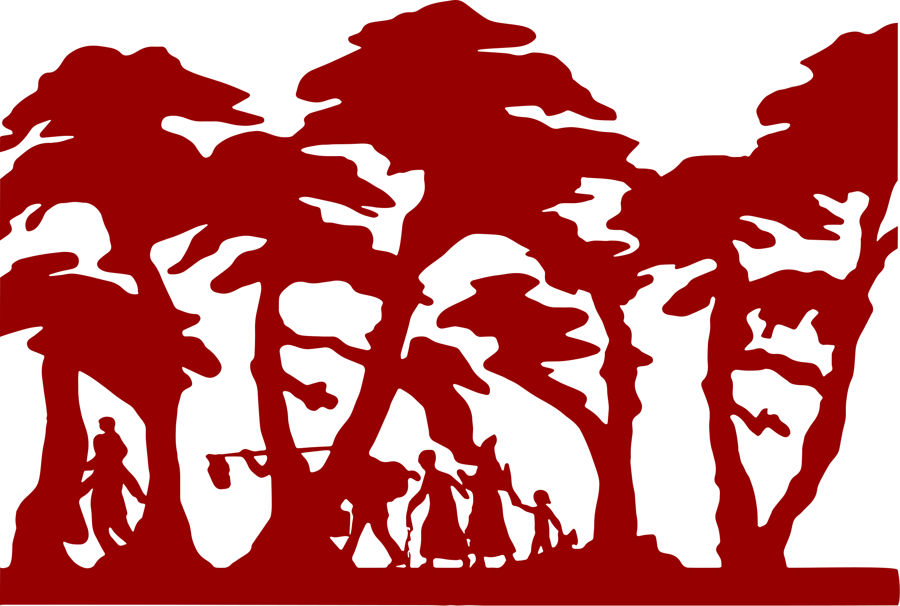

The Darién Gap, a densely forested and nearly impassable region between Panama and Colombia, is a perilous crossing attempted by many migrants fleeing various Latin American countries in hopes of reaching the United States. The extreme weather conditions, thick vegetation, steep hills, dangerous animals, the risk of disease, and the threat posed by criminal groups result in many migrants dying or suffering serious injuries during the journey.

-
About 520,000 migrants
crossed the Darién Gap between Colombia and Panama
-
One in five
migrants crossing is a child, under five years old
-
The Darién Gap
is one of the most dangerous migration routes
-
Many migrants
face violence, including robberies and sexual assaults